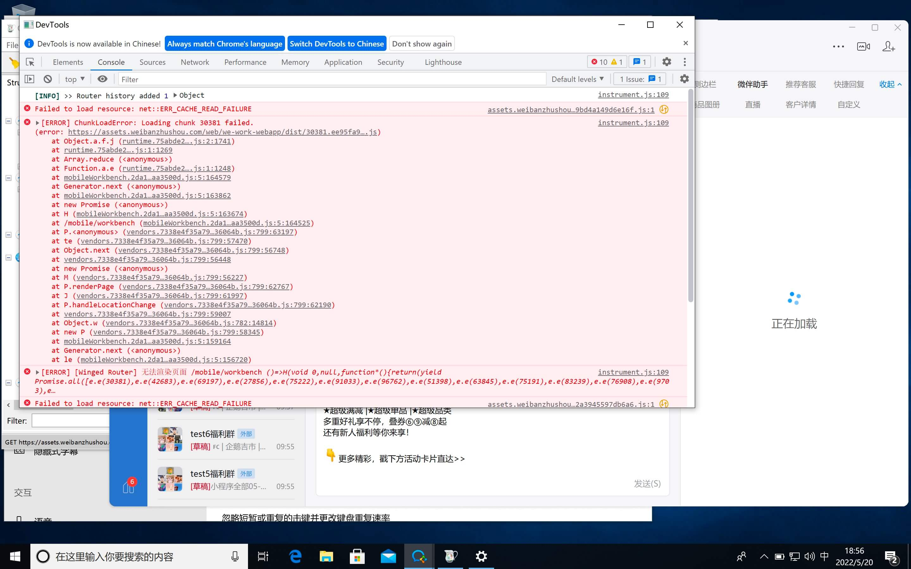
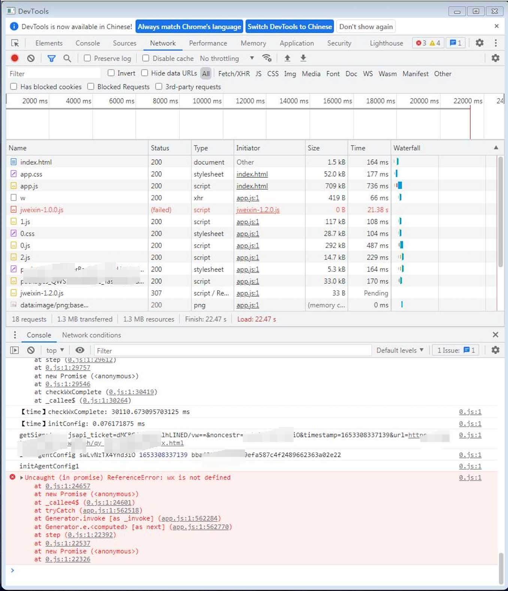

记录背景
企微侧边栏是企业微信 PC 端，用于帮助运营和管理人员，提供工具服务，来协助管理对应的群和客户。
在进入外部群或者外部联系人会话的时候，输入栏右上方才会有的侧边栏图标。
点击侧边栏图标，会在弹窗右侧出现一个定宽(360px)不定高的 webview。
而开发者可以以开发企微 H5 应用的形式对其进行开发。
这个侧边栏出发点确实是好的，不过其开发和调试环境实在是过于恶劣，
可能也因为该功能也是刚开始开发给客户，里面有很多隐藏的坑。
而且官方文档比较模糊，全靠开发者的悟性，企微自身的 bug 让开发浪费了很多时间，也背了无数的锅。
借此记录一下，以免后续开发同学免去踩这些坑。
技术方案
企微后端管理平台创建好
自建应用，且需要将该应用设置为侧边栏项目配置到聊天侧边栏建议将侧边栏设置为第一项。（如需有跳转群操作，侧边栏只会默认打开第一项侧边栏）
该应用需要把
网页授权及JS-SDK设置好可信域名即，初次设置时会拿到一个 txt 秘钥文件，将该文件放置到域名的根目录下，再将域名输入到可信域名列表中，校验成功后即为配置成功。
该文件只会拿到一次，假如弄丢就只能删掉引用重建了。侧边栏开发基础要求
侧边栏与企微 H5 很相似，都是需要经过 wx.config 与 wx.agentConfig 注入应用权限后才能使用对应 api 的。
跳转群会话实现传参
企微侧边栏无法使用路由带参跳转实现传参。
只能使用企微自带的 api 来通过 chatId 来进行跳转，
群会话跳转后，侧边栏的 webview 会销毁后重新创建。
所以路由只能为固定后台设置写死的 url。目前方案为跳转群会话前先存入有效期缓存，
然后在新的会话加载侧边栏页面后，
让页面先读取缓存，如有对应缓存即为作为传参字段来实现。侧边栏的缓存 Storage 仅为 2.5M，且业务对缓存极为依赖
侧边栏如有需求获取用户信息，
每次都需要走一遍 Auth 流程，跳转至企微授权页面，通过 code 来换取用户信息。
不过该操作如果有频繁切换会话的时候，会使用户体验很差，大概需要用时 1s-2s 白屏，如网络不稳定则白屏时间更长。目前方案为第一次走该流程获取用户数据，并缓存下来，
后续使用缓存的用户数据，不再走登录流程。
如果企微更换用户登录，
则需要用户主动触发更换用户，或者通过接口返回异常来判断用户是否异常，而进行更换用户交互。
开发踩坑
侧边栏白屏
a) loading chunk {} failed
该问题疑似企微的 webview 功能不是很健全，一些现代浏览器的基本兼容都没有实现。
通过 webpack 打包的代码块没有加载成功。代码不完整导致白屏。
尝试通过生命周期捕获异常，尝试了如下几种方法，不过没有办法捕捉异常(即没有弹出 alert)。1
2
3
4
5
6
7
8
9
10
11
12
13
14
15
16
17
18
19
20
21
22
23
24
25
26
27
28
29
30
31
32
33
34
35
36
37
38
39
40
41
42
43
44const forceRefresh = () => {
console.log('app forceRefresh', location.href)
// 设置只强制刷行一次页面
if(location.href.index0f('#reloaded') === -1) {
alert(`即将刷新页面`)
location.href = location.href + '#reloaded'
window.location.reload(true)
} else {
alert('请手动刷新页面!')
}
}
componentDidMount() {
console.warn('app componentDidMount');
window.onerror = (e) => {
alert(`app DidMount ${JS0N.stringify(e)}`)
console.warn('window.onerror', e)
}
window.addEventListener('error', (error) => {
console.log('app error', error,error &&error.message)
const pattern = /Loading chunk (\d)+ failed/g
const isChunkLoadFailed=error.message.match(patterr)
if (isChunkLoadFailed) {
forceRefresh()
}
})
}
componentDidCatch(error, info) {
alert(`app DidCatch ${JSON.stringify(error)}`)
console.log('componentDidCatch', error, info)
if (String(error).includes('Loading chunk')) {
window.location.reload()
}
}
componentDidCatchError(error, info) {
alert(`app DidCatchError ${JSON.stringify(error)}`)
console.log('componentDidCatchError', error, info)
if (String(error).includes('Loading chunk')) {
window.location.reload()
}
}目测这个 bug 在最新版的企微上好像没有再复现了，可能企微偷偷的修复该问题了。
b) wx is not defined
因为是通过异步 https 加载的 jweixin-1.2.0.js 文件，如果网络等原因 js 未加载成功，或加载过慢而 wx 对象异步操作被提前使用，
这个时候直接去调用 wx 对象即会报错，程序不在往后走，现象为白屏。
目前方案为，通过 try catch 来判断是否拿到 wx 对象，如果没有则等待一段时间，直至拿到 wx 对象。
如果一定时间内依然拿不到，就去动态新增 jweixin-1.2.0.js 脚本，去重新请求一次 js 文件。
调用跳转群会话 api，无法跳转异常群，且该回调也不会报错。
以下为异常群情况，
静默群：用户被拉入一个外部群，不过群里没人发言，该用户的会话列表不存在该群，是无感知的，不过后台群列表统计能拿到该群，则该群属于静默群。
解散群：群已解散。
目前方案为执行跳转后，在成功的回调通过该方法wx.invoke('getContext')和wx.invoke('getCurExternalChat')方法来判断。
如果真正的跳转成功，那么 webview 就会销毁后续逻辑不再执行，
如果真正的跳转失败，那么后续逻辑还会执行，判断当前群 chatId 和期望跳转 chatId 是否相同，
如果相同则算作正常；如果不相同，则算作异常群跳转失败。Win/Mac 环境表现不一样。
Mac 支持 jweixin-1.6.0 版本引用。
Win 仅支持 jweixin-1.2.0 版本引用。（如引用 1.6.0 版本没有报错直接程序卡住白屏。通过打印日志 wx.agentConfig 为 undefined）引用 jweixin-1.2.0 版本后。
官方文档说明从企业微信 3.0.24 及以后版本，无须先调用 wx.config，可直接 wx.agentConfig。Mac 直接调用 wx.agentConfig 报错，一定需要再 wx.config 之后的 wx.ready 回调中使用，才能正常。
Win 则可以直接调用 wx.agentConfig。配置较差电脑，如果输入栏内有信息不发出去，调用跳转群 api 会出现闪退情况。
该问题疑似企微自身 bug。配置较差电脑，侧边栏使用跳转群 api 次数频繁后，电脑会慢慢越来越卡。
该问题疑似企微自身 bug。连续发送文字、发送图片，图片有概率会出现在文字中间。
该问题疑似企微自身 bug。
目前方案为，发送文字后，通过一定时间的延迟再去发送下一个类型的消息。